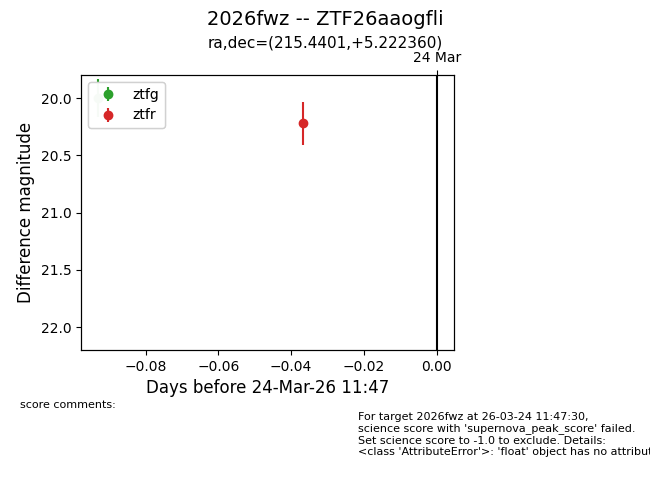
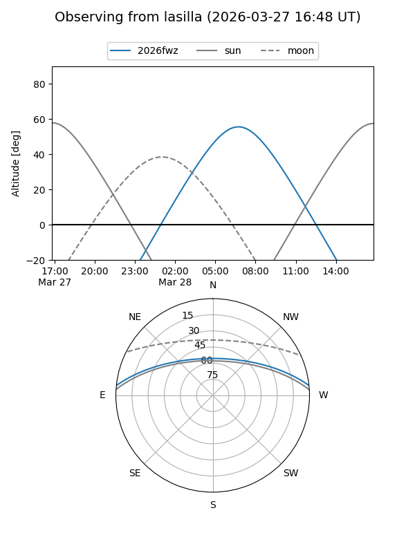
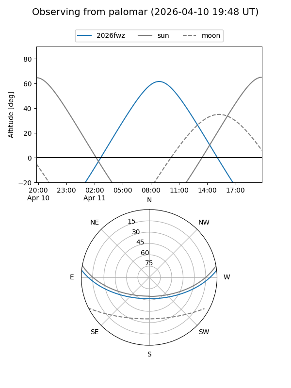
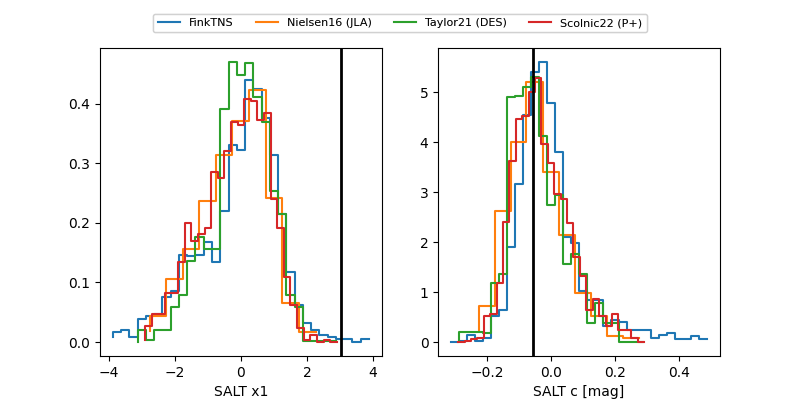

2026fwz
Target 2026fwz at 2026-03-24 11:49
Aliases and brokers:
FINK: link
Lasair: link
ALeRCE: link
TNS: link
YSE: link
alt names
ZTF26aaogfli (ztf,fink_ztf)
2026fwz (tns,yse)
Coordinates:
equatorial (ra, dec) = 215.4401,+5.22236
equatorial (HMS+DMS) = 14:21:45.62,+05:13:20.50
galactic (l, b) = (351.4350,+59.30029)
Flags:
Photometry:
last ztfg=20.00, ztfr=20.22
1 ztfg, 1 ztfr detections
Lightcurve

Visibility


Additional plots
